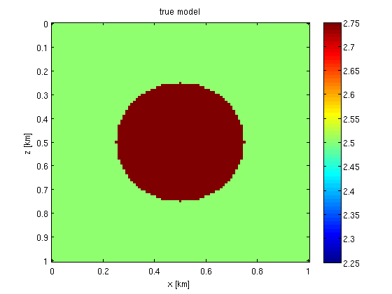
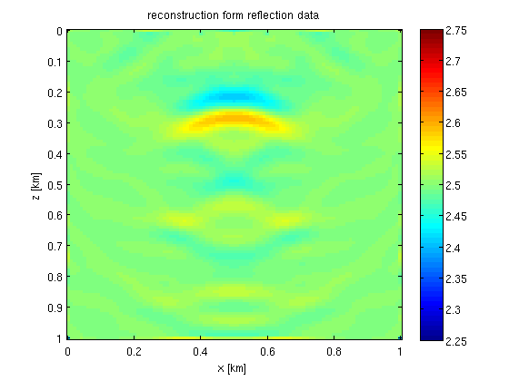
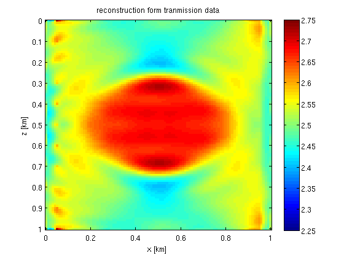

Basic Waveform inversion: Examples and results
Scripts to reproduce the famous Camembert example, as well as results from sevaral papers are included.
Contents
Camembert example
The basic functionality of the waveform inversion code is demonstrated on an example based on the famous `Camembert' model [1]. See the script camembert.m.
% true model v = dlmread([resultsdir '/camembert/vtrue.dat']); o = [0 0]; d = [10 10]; n = [101 101]; v = 1e-3*reshape(v,n); [z,x] = odn2grid(o,d,n); z = z*1e-3; x = x*1e-3; figure;imagesc(x,z,v,[2.25 2.75]);colorbar; xlabel('x [km]');ylabel('z [km]'); title('true model');
% reconstructions vnr = dlmread([resultsdir '/camembert/vn_r.dat']); vnt = dlmread([resultsdir '/camembert/vn_t.dat']); vnr = 1e-3*reshape(vnr,n); vnt = 1e-3*reshape(vnt,n); figure;imagesc(x,z,vnr,[2.25 2.75]);colorbar; xlabel('x [km]');ylabel('z [km]'); title('reconstruction form reflection data'); figure;imagesc(x,z,vnt,[2.25 2.75]);colorbar; xlabel('x [km]');ylabel('z [km]'); title('reconstruction form tranmission data'); 